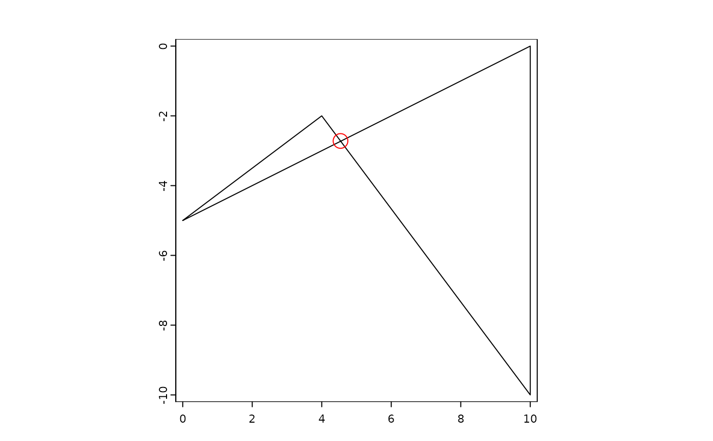

Check or fix polygon or extent validity
is.valid.RdCheck the validity of polygons or attempt to fix it. Or check the validity of a SpatExtent.
Usage
# S4 method for class 'SpatVector'
is.valid(x, messages=FALSE, as.points=FALSE)
# S4 method for class 'SpatVector'
makeValid(x)
# S4 method for class 'SpatExtent'
is.valid(x)Examples
w <- vect("POLYGON ((0 -5, 10 0, 10 -10, 0 -5))")
is.valid(w)
#> [1] TRUE
w <- vect("POLYGON ((0 -5, 10 0, 10 -10, 4 -2, 0 -5))")
is.valid(w)
#> [1] FALSE
is.valid(w, TRUE)
#> valid reason
#> 1 FALSE Self-intersection[4.54545454545454 -2.72727272727273]
plot(w)
points(cbind(4.54, -2.72), cex=2, col="red")

e <- ext(0, 1, 0, 1)
is.valid(e)
#> [1] TRUE
ee <- ext(0, 0, 0, 0)
is.valid(ee)
#> [1] TRUE